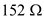

Refer to Figure 8.43 in the textbook for a four-stage bipolar op-amp.
Replace the resistor,  with a constant current source of 1 mA.
with a constant current source of 1 mA.
Figure 1
Refer to Figure 8.43 in the textbook for a four-stage bipolar op-amp.
Replace the resistor, with a constant current source of 1 mA.
Figure 1
(a)
Calculate the third stage gain with .

Substitute for  ,
,  for
for  ,
,  for
for  , and
, and  for
for  .
.

Consider that the resistance of the current source is very high.
Calculate the new value of the gain at third stage of the amplifier.
Substitute  for
for  ,
,  for
for  , and
, and  for
for  .
.
Calculate the change in the overall gain.

Substitute 8513 V/V for  , for
, for  , and for
, and for  .
.
Therefore, the overall gain,  is, .
is, .
Consider that the load resistance, .
Calculate the amplifier the gain.
Here, the output resistance, .
Substitute  for  ,
,  for
for  , and 8513 V/V for
, and 8513 V/V for  .
.

Therefore, the original amplifier gain when loaded with  is, .
is, .
The output resistance is,
Therefore, calculate the new value of the gain.
Substitute for  ,
,  for
for  , and 173079.5 V/V for
, and 173079.5 V/V for  .
.
Therefore, the gain when the output resistance modified with  load is, .
load is, .